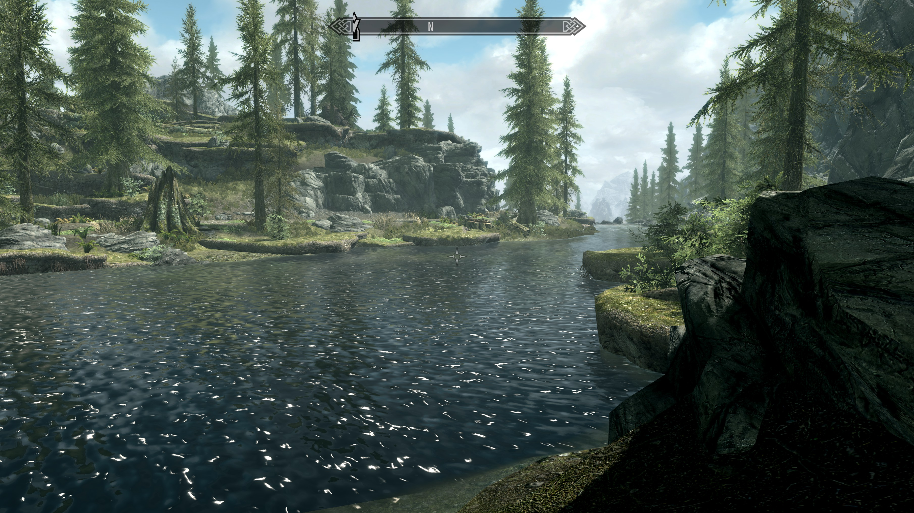

Background¶
This paper is an investigation into natural terrain generation in the Unity game engine, meaning environments that conform to the expected geological, botanical, and other attributes of the “real world” (or whatever world’s expectations we’re trying to render) without being directly sampled from it.
Terrain generation is applicable to a number of fields, but primarily computer games and simulations. It’s often desirable to have “real-world-like,” yet still fictitious settings for player interaction, or be able to generate “probable” terrains for unexplored areas that we wish to answer questions about (or land a spacecraft on).
The exact usage often doesn’t matter—and Unity’s primary use is for games—so we’ll use “game” as a catch-all term for the rest of this discussion.
Author's Note: I'm leaving the above paragraphs in. But as I've written this, it's become pretty obvious that "game" nature and "real" nature are mostly incompatible goals. So, when forced to make a choice--which happens more often than you'd expect, typically a sort of cascade effect around distance and scale--I've gone with team "game."
Geology, Biome, and Water¶
A "Terrain" as we customarily think of it is made up of at least two very high-level properties.
First, we have the "Geology," which determines the physical structure of the "ground" in the terrain. Examples include "mountains", "hills", "plains", and more exotic structures like canyons, badlands, moors, buttes, plateaus, land bridges, caves, etc. We can even stretch the word “natural” to the breaking point to include things like Avatar’s air-floating islands for magical worlds. In Unity's built-in terrain objects, geology is represented by the components related to the mesh: the mesh itself, as well as colliders, heightmaps, nav meshes, and the like.
Second, we have the "Biome," which is associated with the (generally biological) details of an area. Examples here would be "swamp", "sea", "lake", "desert", "barren", "forest," and many more. Unity's terrain objects include these as the "trees" and "details" components. Note that there’s some fuzziness about “biological” here. Things like small rock formations, scattered stones, stalactites and stalagmites, and other “small mineralogical” things aren’t biological, but they’d generally be handled in a manner similar to the locating of plants, and hence lumped into the biome.
“Water” (or “hydrology”) is a weird component which could be considered either geology or biome, both, or entirely independent. How a game or simulation deals with it will largely depend on whether water is a "decoration" or an interactive environment of its own. Unity itself shares this ambiguity, and has generally just given up on implementing water as a standard part of the engine in the early-2020’s versions of the engine. We’ll consider it separately just because many implementations are likely to.
For example, consider this screenshot from Bethesda Softwerks's Skyrim:Enhanced Edition.1

The shape of the world around us would be the geology, including the terraced rocks, sloping shores, and even the (underwater) river bed. The river itself is of course water, and most of the rest of what we see would be the biome: the trees, the grass, the large stump on the opposite shore, and maybe even some of those smaller rocks areound the river.
It's common in games today to combine the two (usually by including geology as part of the biome), and certainly they're often overlapping concepts. But keeping them separate helps is in a couple of ways. First, they're handled at very different parts of the terrain generation process. Second, being able to combine and apply different combinations lets us re-use components to create flexibility. For example, a relatively flat terrain might be a swamp, desert, moor, plain, wheatfield, or several other things depending on which biome it’s paired with. Similarly, a high-altitude biome might be reasonably applied to multiple “mountain” geologies and even things like high meadows.
Any categorizations we use are likely to be fuzzy, and when we encounter such ambiguity, we'll likely just default to "whatever makes the implemenation easier." For specific examples:
-
Are the smaller rocks along the river shore part of the geology, or part of the biome? The answer might depend on our game engine, but if we were implementing this in Unity, we could be reasonably certain that the larger "shape" of the terrain would be implemented as a terrain object (or some similar standin, see the later discussions of voxel worlds) and hence geology, and the "lumpy" rocks would be details built in (as would any place where the rocks overhang the world below, since a Unity terrain object cannot represent overhangs).
-
More generally, how about the grass and small plants? There's two types here. The more interesting (to the player) kind that has three-dimensional shape (even if it's represented by a billboard), and the kind that's just "painted" onto the ground. They're implemented in most game engines by at least three different subsystems:
textures : which make up the "paint job" of the actual polygons
billboards :that show a two-dimensional illusion of three dimensions by insuring the textured face always faces the player. These are used as a way to save valuable polygons by not building 3d meshes of objects that are unimportant, vast in quantity, or distant
meshes :that represent things that need 3d physicality in the world (and themselves are textured). This would be things like rocks on which the player can sit or stand; trees they can climb, cut down, or must avoid; and really any non-terrain object that the player needs to be able to see from all sides.
(Note: Playing with markdown, here's the same thing as a table!)
| Type | Unity Type | Description |
|---|---|---|
| Texture | Sprite/Material | The images used to paint the polygons of a mesh |
| Billboard | Mesh + Material | a 2-dimensional illusion of a 3-dimensional object, where the single polygon face (usually a quad) faces the player at all times |
| Meshes | Mesh | A 3D object made up of vertices, edges, polygons, and textures (and possibly other elements) for drawing an "object" in the virtual world |
It is not atypical for a single "object" to be represented at various times by all of these methods. A forest sufficiently distant that a player is unlikely to be resolving (or caring about) individual trees may well just be a "trees texture" painted on the terrain itself. As the player gets closer, the trees will individualize as billboards, and as meshes when the player gets closer still. Modern game engines have mechanisms to manage this magic, reducing the "jumping" as billboard suddenly becomes a mesh as the player approaches.
Unity Terrain GameObjects¶
The Unity engine provides a high-level game object called “Terrain.” Unity Terrain objects consist of both geology (represented as a heightmap), and biome (represented as a “trees” collection and a “details” collection). It does not handle water directly (and since about 2019 Unity has not included the “Standard Assets” collections that used to provide the easiest implementation), so water features are imposed as separate game objects, usually as one or more geometric volumes or a simple “surfaces” at a particular altitude, depending on the needs of the game.
-
Note that Skyrim is not a Unity game (and in fact, most of the examples in these early chapters aren't), it's just used as an example of the types of things we might like to build. Skyrim is built using Bethesda Softwerks's Creation Engine. ↩